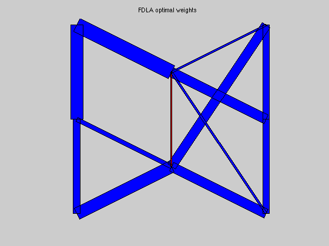
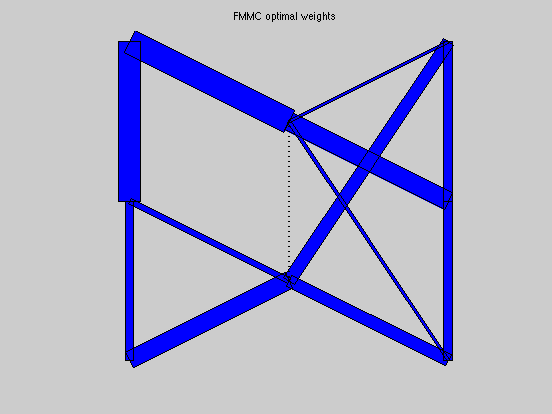
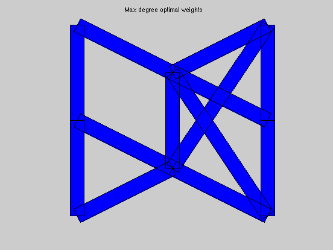
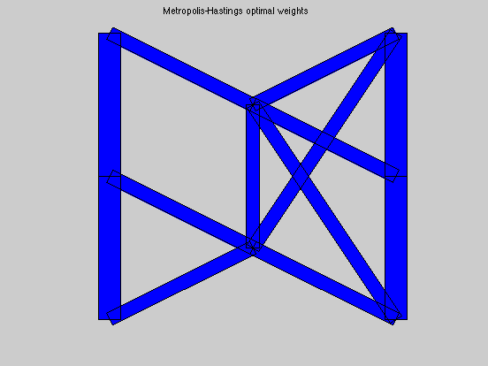

FDLA and FMMC solutions for an 8-node, 13-edge graph
A = [ 1 0 0 1 0 0 0 0 0 0 0 0 0;
-1 1 0 0 1 1 0 0 0 0 0 0 1;
0 -1 1 0 0 0 0 0 -1 0 0 0 0;
0 0 -1 0 0 -1 0 0 0 -1 0 0 0;
0 0 0 -1 0 0 -1 1 0 0 0 0 0;
0 0 0 0 0 0 1 0 0 0 1 0 0;
0 0 0 0 0 0 0 -1 1 0 -1 1 -1;
0 0 0 0 -1 0 0 0 0 1 0 -1 0];
xy = [ 1 2 3 3 1 1 2 3 ; ...
3 2.5 3 2 2 1 1.5 1 ]';
fprintf(1,'WARNING: The optimal weight computations take some time...\n');
[n,m] = size(A);
[ w_fdla, rho_fdla ] = fdla(A);
[ w_fmmc, rho_fmmc ] = fmmc(A);
[ w_md, rho_md ] = max_deg(A);
[ w_bc, rho_bc ] = best_const(A);
[ w_mh, rho_mh ] = mh(A);
tau_fdla = 1/log(1/rho_fdla);
tau_fmmc = 1/log(1/rho_fmmc);
tau_md = 1/log(1/rho_md);
tau_bc = 1/log(1/rho_bc);
tau_mh = 1/log(1/rho_mh);
fprintf(1,'\nResults:\n');
fprintf(1,'FDLA weights:\t\t rho = %5.4f \t tau = %5.4f\n',rho_fdla,tau_fdla);
fprintf(1,'FMMC weights:\t\t rho = %5.4f \t tau = %5.4f\n',rho_fmmc,tau_fmmc);
fprintf(1,'M-H weights:\t\t rho = %5.4f \t tau = %5.4f\n',rho_mh,tau_mh);
fprintf(1,'MAX_DEG weights:\t rho = %5.4f \t tau = %5.4f\n',rho_md,tau_md);
fprintf(1,'BEST_CONST weights:\t rho = %5.4f \t tau = %5.4f\n',rho_bc,tau_bc);
figure(1), clf
plotgraph(A,xy,w_fdla);
text(0.55,1.05,'FDLA optimal weights')
figure(2), clf
plotgraph(A,xy,w_fmmc);
text(0.55,1.05,'FMMC optimal weights')
figure(3), clf
plotgraph(A,xy,w_md);
text(0.5,1.05,'Max degree optimal weights')
figure(4), clf
plotgraph(A,xy,w_bc);
text(0.5,1.05,'Best constant optimal weights')
figure(5), clf
plotgraph(A,xy,w_mh);
text(0.46,1.05,'Metropolis-Hastings optimal weights')
WARNING: The optimal weight computations take some time...
Calling SDPT3: 73 variables, 59 equality constraints
------------------------------------------------------------
num. of constraints = 59
dim. of sdp var = 16, num. of sdp blk = 2
dim. of free var = 1 *** convert ublk to linear blk
*******************************************************************
SDPT3: homogeneous self-dual path-following algorithms
*******************************************************************
version predcorr gam expon
NT 1 0.000 1
it pstep dstep p_infeas d_infeas gap mean(obj) cputime
-------------------------------------------------------------------
0 0.000 0.000 4.3e+00 2.2e+00 1.8e+01 0.000000e+00 0:0:00 chol 1 1
1 1.000 1.000 2.7e+00 1.4e+00 2.2e+01 8.156101e-02 0:0:00 chol 1 1
2 0.810 0.810 4.9e-01 2.5e-01 3.1e+00 5.379681e-01 0:0:00 chol 1 1
3 1.000 1.000 1.1e-01 5.7e-02 7.6e-01 7.062214e-01 0:0:00 chol 1 1
4 1.000 1.000 1.6e-02 8.2e-03 7.4e-02 6.460670e-01 0:0:00 chol 1 1
5 0.963 0.963 2.2e-03 1.2e-03 9.7e-03 6.435497e-01 0:0:00 chol 1 1
6 0.977 0.977 1.9e-04 9.6e-05 4.3e-04 6.434139e-01 0:0:00 chol 1 1
7 0.974 0.974 1.4e-05 7.4e-06 1.5e-05 6.433419e-01 0:0:00 chol 1 1
8 1.000 1.000 8.4e-07 4.3e-07 9.5e-07 6.433320e-01 0:0:00 chol 1 1
9 1.000 1.000 1.1e-07 5.5e-08 4.5e-07 6.433314e-01 0:0:00 chol 1 1
10 1.000 1.000 1.2e-08 6.2e-09 4.6e-08 6.433314e-01 0:0:00 chol 1 1
11 1.000 1.000 1.1e-09 6.7e-10 5.1e-09 6.433314e-01 0:0:00
Stop: max(relative gap, infeasibilities) < 1.49e-08
-------------------------------------------------------------------
number of iterations = 11
primal objective value = 6.43331403e-01
dual objective value = 6.43331402e-01
gap := trace(XZ) = 5.10e-09
relative gap = 3.10e-09
actual relative gap = 5.11e-10
rel. primal infeas = 1.11e-09
rel. dual infeas = 6.74e-10
norm(X), norm(y), norm(Z) = 3.3e+00, 8.8e-01, 7.9e-01
norm(A), norm(b), norm(C) = 1.3e+01, 1.5e+00, 1.4e+00
Total CPU time (secs) = 0.3
CPU time per iteration = 0.0
termination code = 0
DIMACS: 1.1e-09 0.0e+00 6.7e-10 0.0e+00 5.1e-10 2.2e-09
-------------------------------------------------------------------
------------------------------------------------------------
Status: Solved
Optimal value (cvx_optval): +0.643331
Calling SDPT3: 94 variables, 80 equality constraints
------------------------------------------------------------
num. of constraints = 80
dim. of sdp var = 16, num. of sdp blk = 2
dim. of linear var = 21
dim. of free var = 1 *** convert ublk to linear blk
*******************************************************************
SDPT3: homogeneous self-dual path-following algorithms
*******************************************************************
version predcorr gam expon
NT 1 0.000 1
it pstep dstep p_infeas d_infeas gap mean(obj) cputime
-------------------------------------------------------------------
0 0.000 0.000 6.0e+00 3.2e+00 3.9e+01 0.000000e+00 0:0:00 chol 1 1
1 1.000 1.000 3.9e+00 2.1e+00 4.8e+01 -2.262361e+00 0:0:00 chol 1 1
2 0.685 0.685 1.0e+00 5.6e-01 9.2e+00 -4.392709e-01 0:0:00 chol 1 1
3 0.922 0.922 1.7e-01 9.3e-02 1.4e+00 3.836825e-01 0:0:00 chol 1 1
4 1.000 1.000 5.6e-02 3.0e-02 5.4e-01 5.829070e-01 0:0:00 chol 1 1
5 0.955 0.955 8.2e-03 4.4e-03 6.6e-02 6.687632e-01 0:0:00 chol 1 1
6 1.000 1.000 2.6e-03 1.4e-03 2.3e-02 6.768416e-01 0:0:00 chol 1 1
7 0.903 0.903 3.9e-04 2.1e-04 3.0e-03 6.804862e-01 0:0:00 chol 1 1
8 0.985 0.985 2.7e-05 1.5e-05 1.7e-04 6.809388e-01 0:0:00 chol 1 1
9 0.975 0.975 1.4e-06 7.4e-07 4.4e-06 6.809609e-01 0:0:00 chol 1 1
10 1.000 1.000 1.4e-07 7.4e-08 1.0e-06 6.809605e-01 0:0:00 chol 1 1
11 1.000 1.000 8.6e-09 4.6e-09 5.1e-08 6.809607e-01 0:0:00 chol
SWM to ill-conditioned, switch to LU factor. lu 1 1
12 1.000 1.000 5.4e-10 2.6e-10 3.2e-09 6.809607e-01 0:0:00
Stop: max(relative gap, infeasibilities) < 1.49e-08
-------------------------------------------------------------------
number of iterations = 12
primal objective value = 6.80960676e-01
dual objective value = 6.80960674e-01
gap := trace(XZ) = 3.21e-09
relative gap = 1.91e-09
actual relative gap = 6.26e-10
rel. primal infeas = 5.38e-10
rel. dual infeas = 2.59e-10
norm(X), norm(y), norm(Z) = 3.7e+00, 1.3e+00, 9.9e-01
norm(A), norm(b), norm(C) = 1.4e+01, 3.0e+00, 1.4e+00
Total CPU time (secs) = 0.5
CPU time per iteration = 0.0
termination code = 0
DIMACS: 5.4e-10 0.0e+00 2.6e-10 0.0e+00 6.3e-10 1.4e-09
-------------------------------------------------------------------
------------------------------------------------------------
Status: Solved
Optimal value (cvx_optval): +0.680961
Results:
FDLA weights: rho = 0.6433 tau = 2.2671
FMMC weights: rho = 0.6810 tau = 2.6025
M-H weights: rho = 0.7743 tau = 3.9094
MAX_DEG weights: rho = 0.7793 tau = 4.0093
BEST_CONST weights: rho = 0.7119 tau = 2.9422
   